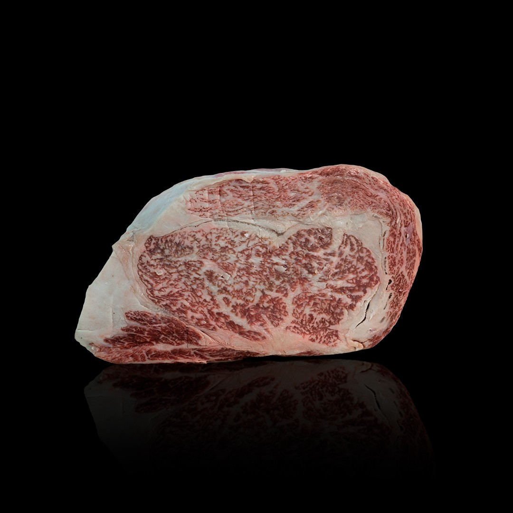
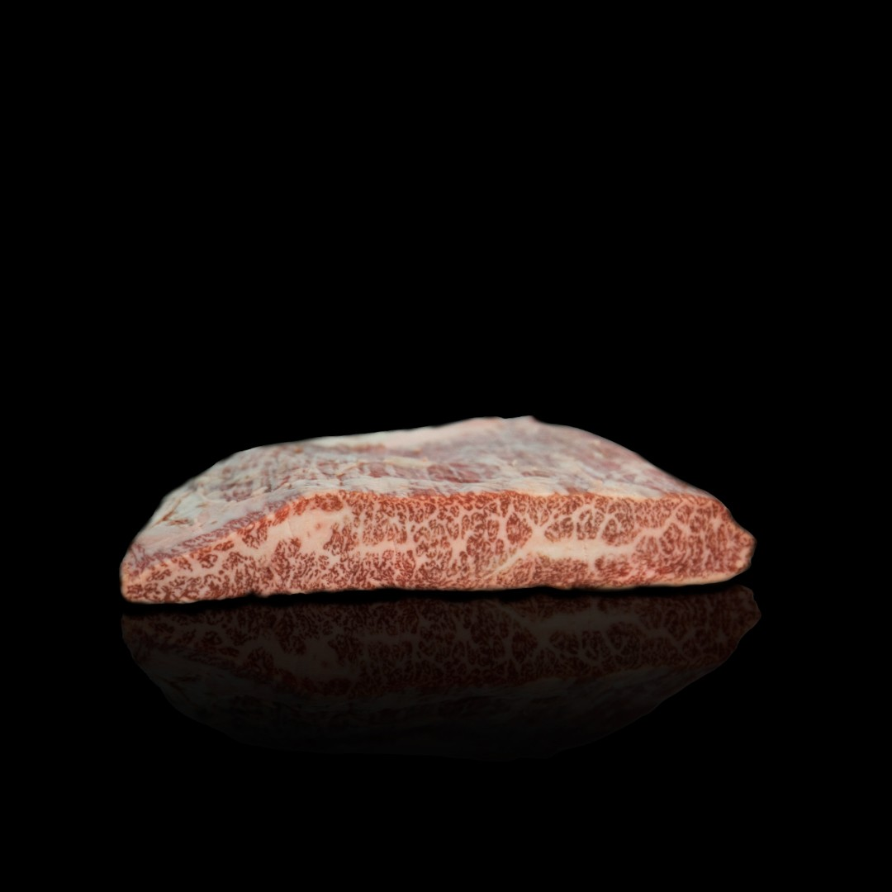
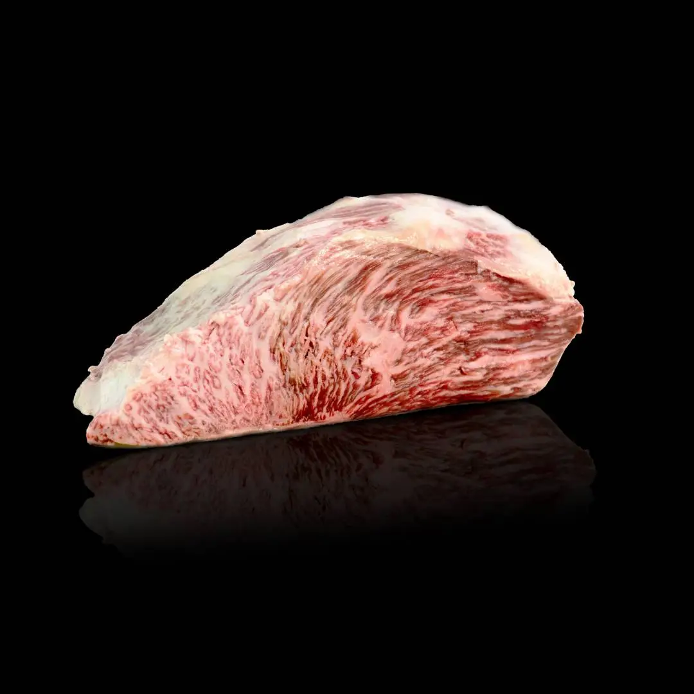
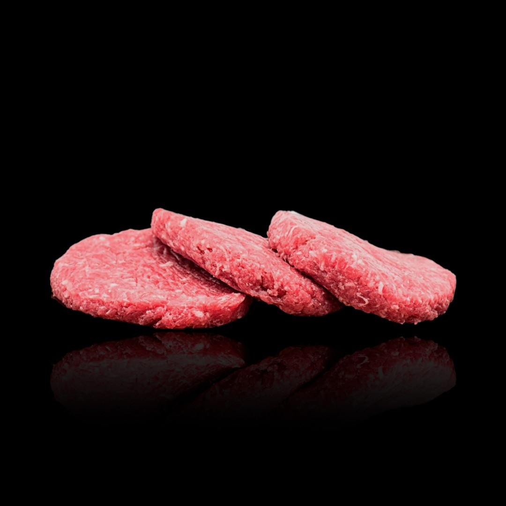
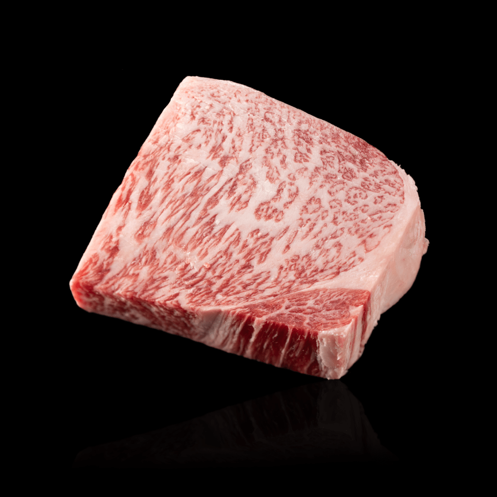

Lomo alto de Wagyu | Rib loin
El lomo alto de Wagyu es una parte extremadamente tierna y veteada. El caviar de la ternera de Wagyu de Sanuki. Corte recomendado para bistecs, barbacoa, roast beef, sukiyaki, shabushabu y también para cocinar al vapor.
Precio: $210
|
|

|
Abanico de Falda de Wagyu (1 kg) | Short Plate
El abanico de falda procede la parte interna de la falda de Wagyu, un corte exquisito, veteado y muy tierno. Entre sus aplicaciones gastronómicas, destacan el bistec, barbacoa, estofado, sukiyaki y shabu shabu.
Precio: $219.99
|
|

|
Tapilla o Picaña de Wagyu | Top Sirloin
La tapilla es la parte baja de la cadera de Wagyu. Es una carne muy exquisita para asar en barbacoa. También se recomienda para bistec, barbacoa, roast beef, estofado, tataki y shabu shabu.
Precio: $337.52
|
|

|
Oferta 2x1 Hamburguesa Wagyu
Compra 2 y paga una hamburguesa de Wagyu Sanuki, una de las carnes más tiernas y jugosas del mundo ahora a tu disposición para hacer de tus hamburguesas un producto totalmente premium. Gracias a su origen es un producto perfecto para hacer a la parrilla, con una grasa totalmente natural y sana.
¡Disfruta de nuestras hamburguesas de Wagyu con esta promoción solo disponible hasta fin de existencias!
Precio: $439.00
|
|

|
Solomillo de Wagyu
El Solomillo de Wagyu, es una carne muy tierna y sabrosa, perfecta para filetear. Corte recomendado para hacer bistecs, barbacoa, roast beef, sukiyaki, shabushabu y también para cocinar al vapor.
Precio: $189.00
|
|

|
Lágrima de Wagyu (1 kg)
Costilla de Wagyu de la parte delantera y deshuesada, lo que se conoce como Lágrima. Una carne sabrosa y jugosa, perfecta para hacer hamburguesas. Además, también admite otro tipo de recetas culinarias como bistecs, para hacer en barbacoa, estofado y los platos típicos japoneses sukiyaki y shabu shabu.
Precio: $150.00
|
|